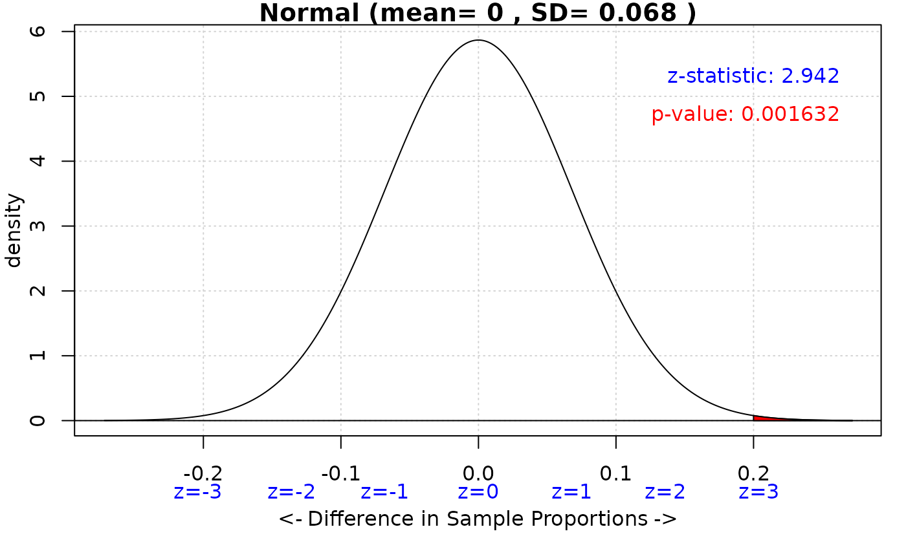
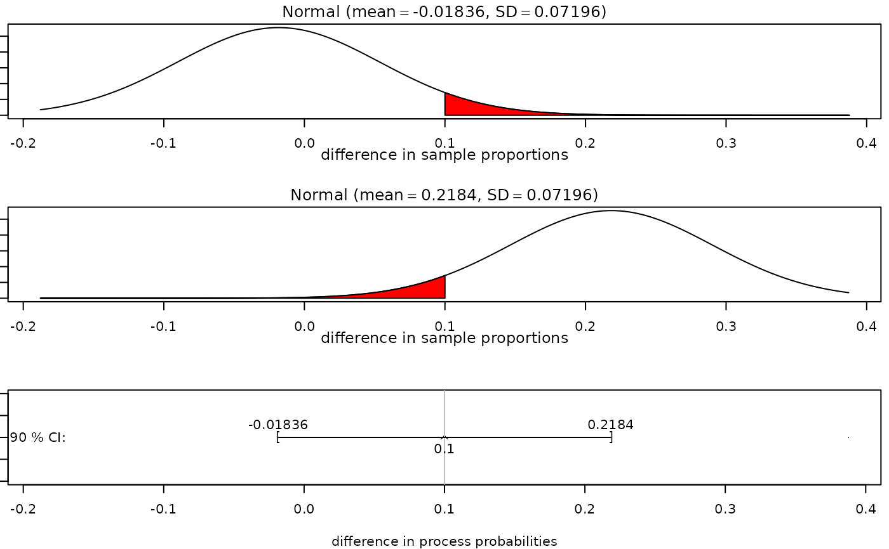

iscamtwopropztest calculates a two-proportion z-test and/or a corresponding confidence interval.
Usage
iscamtwopropztest(
observed1,
n1,
observed2,
n2,
hypothesized = 0,
alternative = NULL,
conf.level = NULL,
datatable = NULL,
verbose = TRUE
)Arguments
- observed1
The observed number of successes in group 1. If a value less than 1 is provided, it is assumed to be the sample proportion.
- n1
The sample size for group 1.
- observed2
The observed number of successes in group 2. If a value less than 1 is provided, it is assumed to be the sample proportion.
- n2
The sample size for group 2.
- hypothesized
(optional) hypothesized difference in probability of success under the null hypothesis.
- alternative
(optional) character string specifying the form of the alternative hypothesis. Must be one of "less", "greater", or "two.sided".
- conf.level
(optional) confidence level(s) for a two-sided confidence interval.
- datatable
(optional) two-way table of counts as an alternative input method.
- verbose
Logical, defaults to
TRUE. Set toFALSEto suppress messages
Value
This function prints the results of the two-proportion z-test and/or the confidence interval. It also generates plots to visualize the test and interval.
Examples
iscamtwopropztest(observed1 = 35, n1 = 50, observed2 = 28, n2 = 45)
#>
#> Two Proportion z test
#>
#> Group1: observed successes = 35, sample size = 50, sample proportion = 0.7
#>
#> Group2: observed successes = 28, sample size = 45, sample proportion = 0.6222
#>
iscamtwopropztest(
observed1 = 0.8,
n1 = 100,
observed2 = 0.6,
n2 = 80,
hypothesized = 0,
alternative = "greater",
conf.level = 0.95
)
#>
#> Two Proportion z test
#>
#> Group1: observed successes = 80, sample size = 100, sample proportion = 0.8
#>
#> Group2: observed successes = 48, sample size = 80, sample proportion = 0.6
#>
#> Null hypothesis : pi1-pi2 = 0
#> Alternative hypothesis: pi1-pi2 > 0
#> z-statistic: 2.942

#> 95 % Confidence interval for pi1-pi2: ( 0.06706878 , 0.3329312 )
#> p-value: 0.001632
iscamtwopropztest(observed1 = 60, n1 = 100, observed2 = 45, n2 = 90, conf.level = 0.90)
#>
#> Two Proportion z test
#>
#> Group1: observed successes = 60, sample size = 100, sample proportion = 0.6
#>
#> Group2: observed successes = 45, sample size = 90, sample proportion = 0.5
#>
#> 90 % Confidence interval for pi1-pi2: ( -0.01835837 , 0.2183584 )
